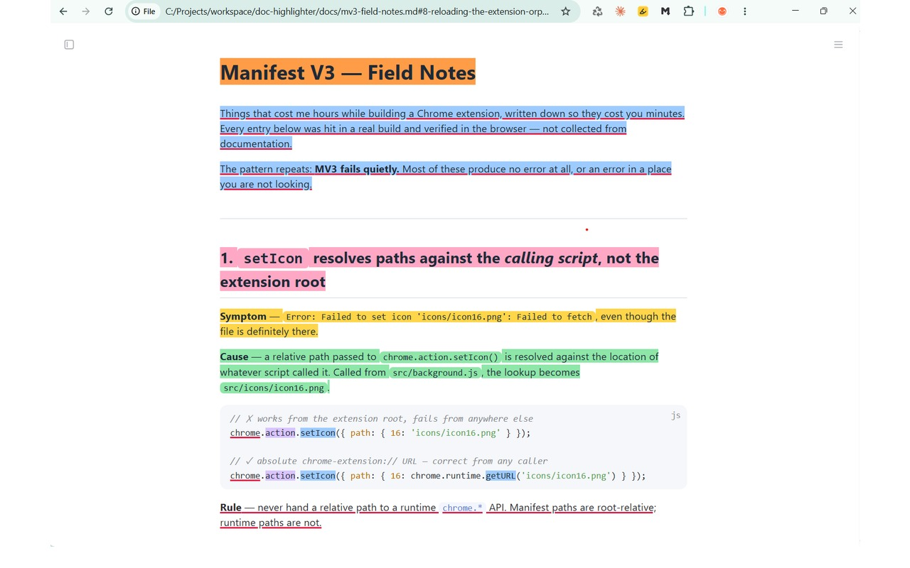
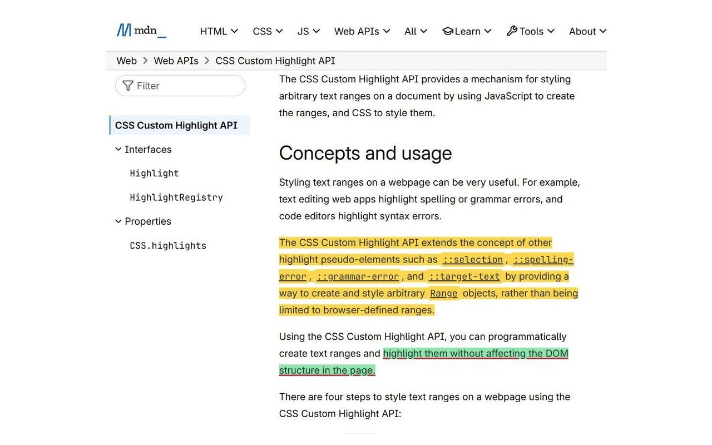

Mark up what you read the way you would mark up paper — including the files on your own disk.
Select text, pick a colour or an underline, and it stays. Close the tab, restart the browser, come back a week later — the marks are still there.
Local .md and .html opened straight from disk: exported
documentation, README files, API references, specs.
No account, no server, no network request anywhere in the extension. Marks are stored locally, and never in a cookie.
They combine — a passage can be yellow and underlined. Every colour keeps text at WCAG AAA contrast.
Each mark remembers the text around it, so it is found again when the document changes. Renaming a local file does not lose it.

.md file opened straight from disk. Note the
file:// address — no server, no upload, no account.
code chips covered
edge to edge.Because website access is optional, installing the extension shows no permission warning at all.
chrome:// pages, the Web Store,
or other extensions' pagesSomething not working, or an idea for it? Open an issue on the issue tracker, or write to CONTACT_EMAIL.